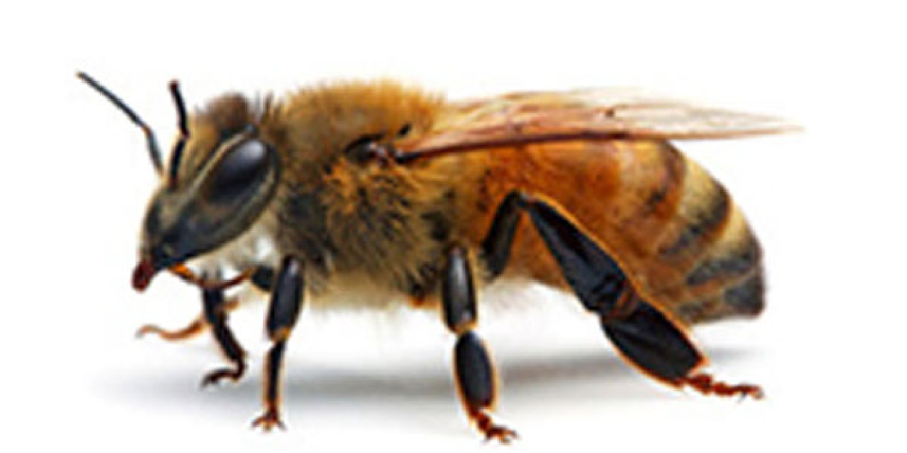
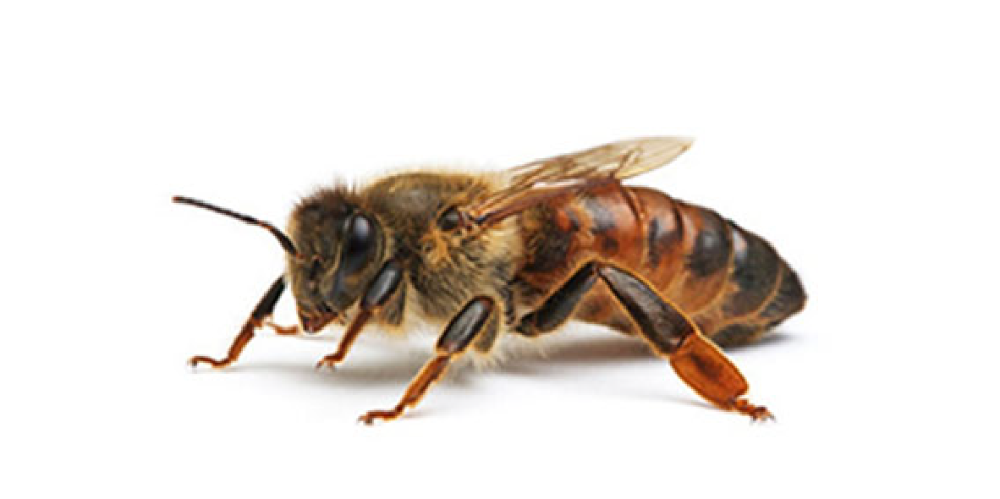
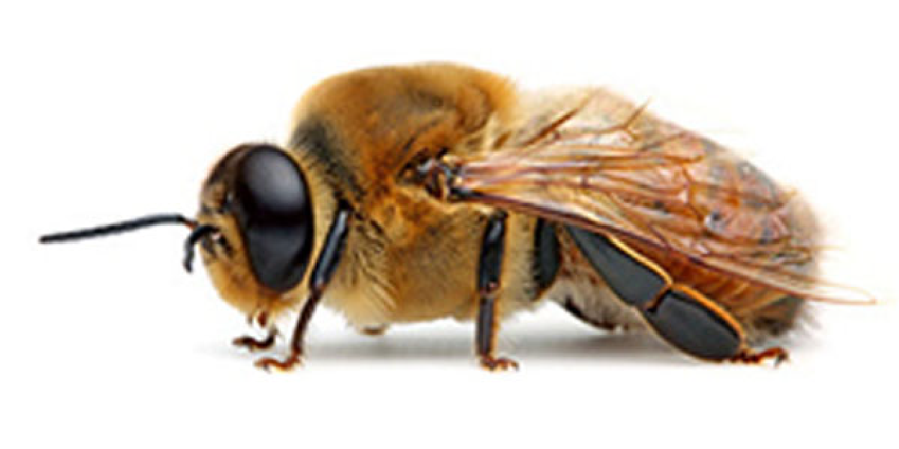
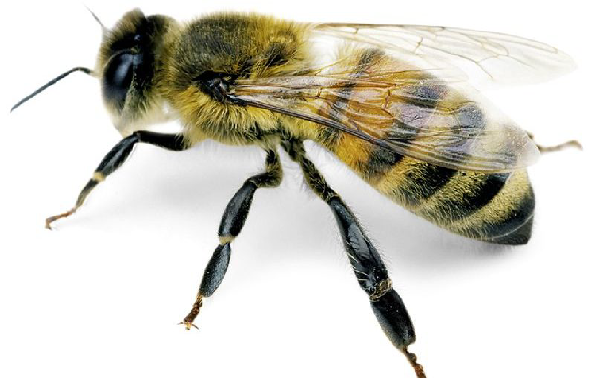
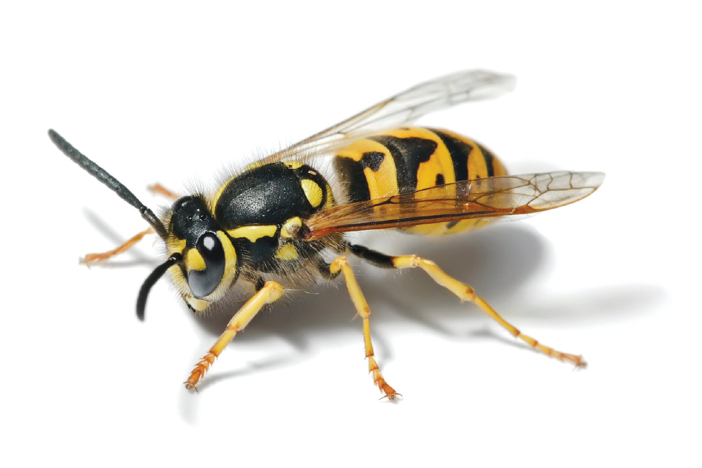
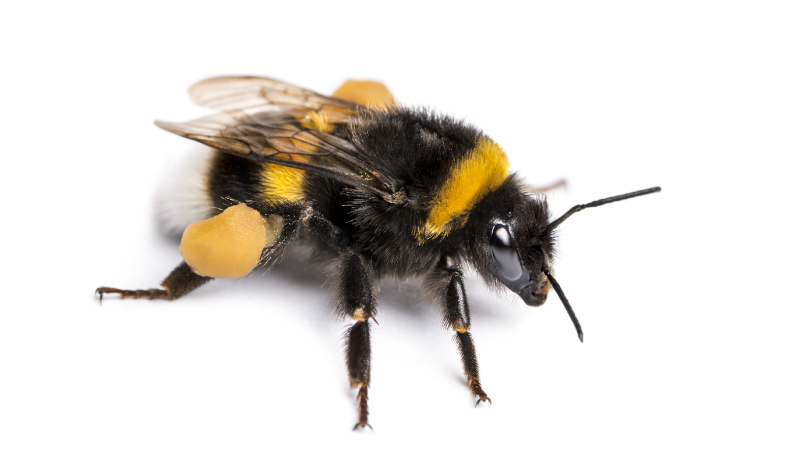
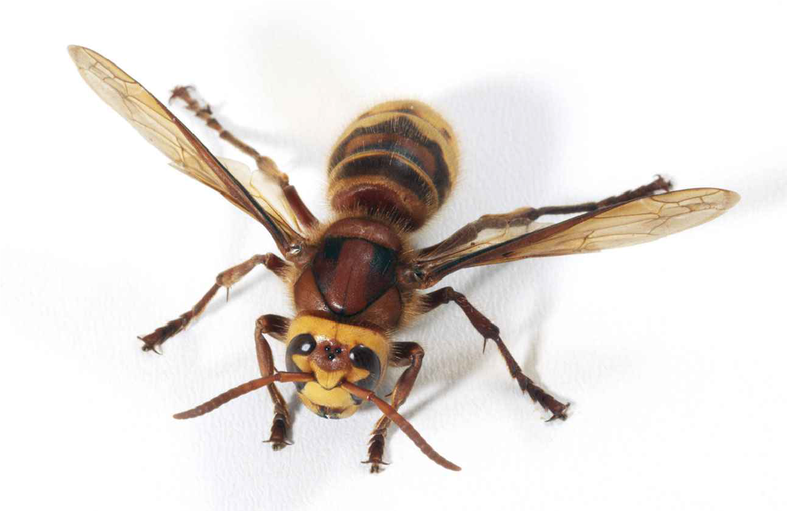

C'est quoi une abeille?

2 paires d’ailes : Pour se déplacer avec précision.
6 petites pattes : dont 2 équipées d’un peigne et d’une brosse pour former des pelotes de pollen, et ramenées à la ruche.
Une longue langue pour aspirer le nectar.
Comment la reconnais-t-on ?
Les ouvrières
- Elles sont les plus nombreuses. - Elles assurent le bon fonctionnement de la ruche.
La reine
- C’est la plus grande des abeilles. - Il n’y a une seule reine par ruche. - C’est la seule abeille qui pond des œufs. La reine donne naissance à toutes les ouvrières et tous les faux bourdons de la ruche. - Elle est très importante pour la ruche.
Les mâles ou Faux Bourdons
- Le faux bourdon est plus gros que l'ouvrière. - Ils sont plus trapus et ne possèdent pas de dard, contrairement aux femelles.
Quelques ressemblances...
Abeille
- Insecte velu - Végétarienne - Pique pour se défendre. Elle perd son dard lors de la piqure et meurt ensuite.
Guêpe
- Insecte non velu. - Omnivore : mange des plantes et de la viande. - Plus mince et plus longue que l'abeille. - Plus agressive. - Piqures plus douloureuse. - Peut piquer plusieurs fois sans mourir
Bourdon
- Insecte velu. - Plus gros et plus trapu que l'abeille. - Tâches sur le corps : jaune, orange, rouge ou blanches. - Il peut piquer plusieurs fois sans mourir.
Frelon
- Il ne pique qu'en dernier recours (pour se défendre). - Sa piqure est particulièrement douloureuse.